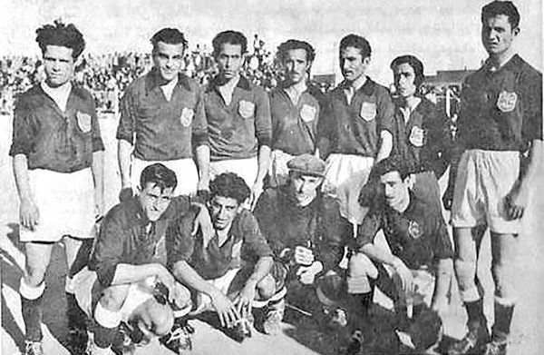

First Esteghlal Team
1945
The Oldest Picture from esteghlal(docharkhe savaran)
First AFC cup
1970
First international cup won by an Iranian team!
Second AFC cup
1990
Second afc cup won by esteghlal between best asian football clubs
Esteghlal FC VS Persepolis FC Darby
The most papular & important Football match in Iran, between 2 Tehranian traditional enemies
Esteghlal Fc Logos
Esteghlal Fc Logos changed 6times in it's history
Voria Ghafury
Voria Ghafury is the Esteghlals current captane and one of the best players
Sergeant Parviz Khosravany
1947
Esteghlal founder, one of the ministers and an army commander in Iran's Royal Army
Farhad Majidy
One of the best players in the Esteghlals history and current head coach of Esteghlal
Esteghlal Fans
Random Picture From Esteghala fans in the Azadi studium located in Tehran
Esteghlal Fan
Another Random Picture From Esteghala fans in the Azadi studium located in Tehran